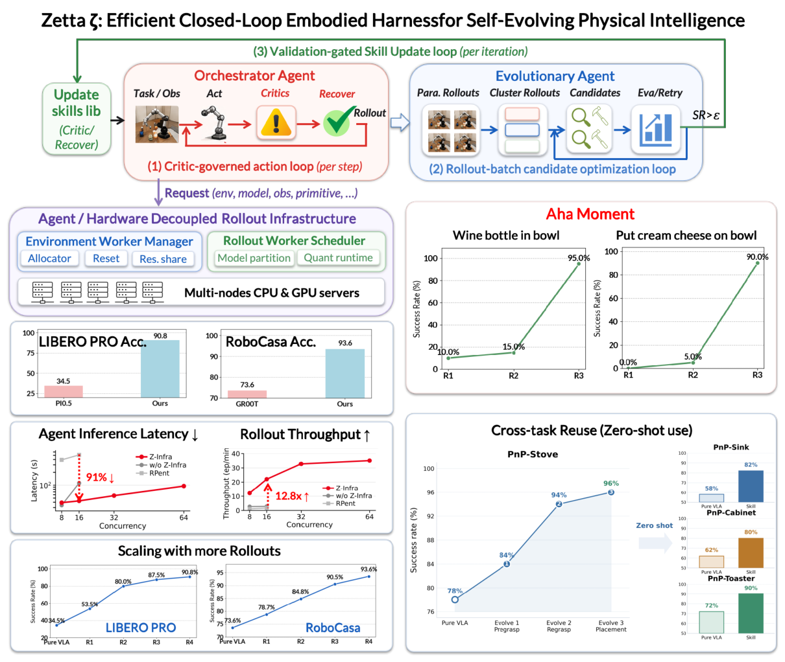
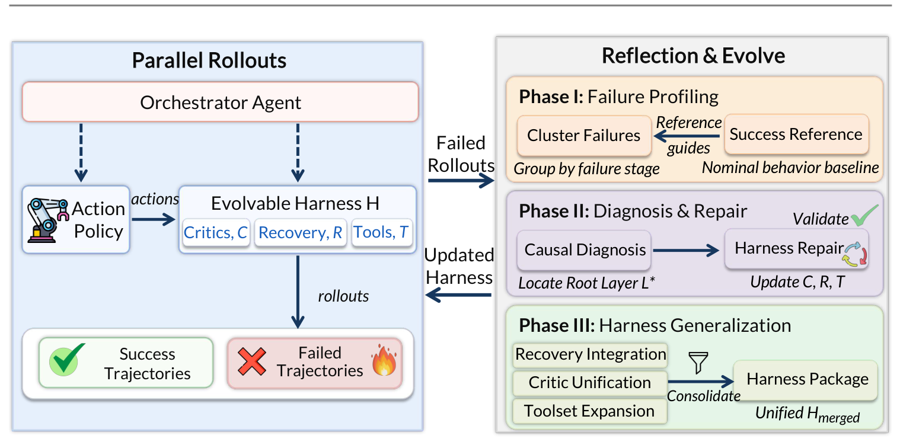

Zetta 深度调研笔记
速览
| 项 | 内容 |
|---|---|
| 一句话 | 把"反思"从大模型身上摘下来交给代码化运行时 critic：冻结 π0.5 出动作，harness H={Critic, Recovery, Tools} 在动作频率上监控执行、毫秒级触发恢复；批量级自进化把验证过的失败蒸馏成新技能 |
| 冻结 | 基座 VLA（π0.5）、编排 agent 的固定逻辑 |
| 演化 | harness 本体 H = {C 运行时 critic（代码写的监控函数）、R 恢复手册（失败机制→可执行策略）、T 异构工具集（规划器/抓取检测/恢复模块）} |
| 头部结果 | LIBERO-Pro Goal 平均 34.5→90.8（Goal-T 31.0→92.5、Goal-S 38.0→89.0）——六篇中对同一底座 VLA 的最大单点提升 |
| 差异点 | 六篇中唯一 VLA 为主（代码不做动作，只监控/审批/恢复）+ 专属推理基础设施 Z-Infra |

① 动机：核心矛盾——慢大脑 vs 快身体
- 物理交互是毫秒级：抓滑信息要在几十 ms 内响应；LLM 推理一次几百 ms 到秒级。
- 此前 harness 大多开环：任务启动后按固定脚本/预规划走，全跑完才复盘——"事后诸葛亮"：教训对下一次有用，对这一次无用。
- 押注：在线判定交给代码（够快），LLM 只做低频裁决与离线进化；harness 与基座解耦、可版本化、可审计——不碰已认证权重的能力增长通道。
② 架构：H = {C, R, T} + 权威分层

| 组件 | 内容 |
|---|---|
| 运行时 Critic C | 代码写的监控函数，在动作频率上扫描执行轨迹（抓取力度、物体偏移…），输出结构化异常报告；无决策权 |
| 恢复手册 R | 失败机制 → 可执行恢复策略的映射（拉取/重抓/重定位…） |
| 工具集 T | 规划器、抓取检测、恢复模块等可执行程序 |
| 编排 Agent | 逻辑固定不变，当"审批人"：核实 critic 上报的证据后才批准触发恢复（authority hierarchy） |
质检员/班组长类比：质检员（critic）眼疾手快但只报警；是否停产（触发恢复、重入 VLA）由班组长（编排 agent）批——防误报滥用，又不失响应速度。
③ 机制：三个时间尺度 + 进化门控
- 动作级（在线）：critic 高频扫描 → 异常报告 → 编排 agent 审批 → 执行恢复剧本。
- 批量级（自进化）：失败按 EOD（最早可观测发散点） 聚类——不看结局看"最早在哪一步分岔"；再沿"评估→Critic→状态→规划→恢复→参数"自上而下诊断：高层逻辑能修就不动低层参数。
- 离线演化：被验证的失败 → 新 critic 函数 / 新恢复剧本 / 新工具，进 H。
两道闸门：
- held-out 回归验证：新版本 harness 必须过留出集回归才上线（自进化有闸门，非无约束工程流程）；
- VLA 重入契约：只有失败证据被显式清除且接触力达到平衡，控制权才交还基座 VLA——防止"带着脏状态续跑"。
④ 数据与基准（tex 已验）
| 指标（LIBERO-Pro，底座 π0.5） | 前 | 后 |
|---|---|---|
| Goal-T | 31.0 | 92.5 |
| Goal-S | 38.0 | 89.0 |
| Goal 平均 | 34.5 | 90.8 |
（来自深蓝学院编译的扩展结论，二手：成功率随自探索经验持续提升；学到的技能支持零样本迁移；出现"顿悟时刻"（Aha Moments）式的能力跳变。）
④A 主结果对比（论文 Table 2/3 + 摘要，tex 已验）
LIBERO-Pro（底座 π0.5，成功率 %）
| Setting | π0.5 | Zetta |
|---|---|---|
| Goal (T) | 31.0 | 92.5 |
| Goal (S) | 38.0 | 89.0 |
| LIBERO-10 (T) | 50.0 | 63.0 |
| LIBERO-10 (S) | 9.0 | 40.0 |
RoboCasa 18 个 Atomic-Seen 任务平均： Pure VLA (GR00T) 73.56 → Zetta 93.56（逐任务 50→100 级提升，如 T6 62→80、T15 50→100）。推理侧 11.1× 加速。
④B 核心消融（诚实标注：无逐组件关闭表）
- 进化 scaling：成功率随进化迭代 34.5% → 90.8% 持续上升（正式结果随自探索经验继续提升）；
- 学到的 recovery 技能支持零样本迁移；出现明确"顿悟时刻"式能力跳变；
- 逐组件（runtime critic / recovery 手册 / 工具集）单独关闭的数字论文以曲线/正文呈现，未提供独立消融大表。
⑤ 信息流（一个执行回合 + 进化批次）
执行中（动作频率，毫秒级）：
π0.5 输出动作块 → critic 代码扫描（力/位姿/接触） → 异常？
├─ 否 → 继续执行
└─ 是 → 结构化报告 → 编排 agent 审批 → 恢复剧本执行
→ 失败证据清除 + 接触力平衡 → 控制权交还 π0.5（重入契约）
批次后（自进化）：
失败 rollout → EOD 聚类（最早分岔点）→ 自上而下归因
→ 提案新 critic 函数 / 恢复剧本 / 工具
→ held-out 回归验证 → 通过则更新 H
⑥ 例子
抓杯子打滑：critic 在夹爪力信号上毫秒级检出"接触力骤降 + 物体位移"，报告"grasp force insufficient"；编排 agent 核实后不重跑 VLA，而是执行恢复剧本"退 2cm → 张开 15% → 重新闭合抓取"；力平衡后才让 π0.5 继续放置。该失败机制随后被蒸馏成 R 里的一条新剧本，同类场景永久免疫。
⑦ 实验·工程·局限
- Z-Infra（配套推理设施）：π0.5 模型分区（VLM 与动作专家拆成独立进程，CUDA IPC 传中间激活）+ 按模块 W8A8/W4A16/W4A8 量化——喂饱自进化所需的并行 rollout 吞吐。自进化速度由 rollout 决定，这是六篇中唯一为"探索吞吐"专门造 infra 的。
- 局限（基于论文与读报）：仿真为主；critic/恢复剧本的代码本身由进化产生，其正确性依赖 held-out 门控的覆盖度；编排 agent 逻辑固定，长尾失败模式可能超出其审批能力；基座限定为可分区块化的 VLA。
⑧ 与另外五篇的关系
- 对 Harness VLA（簇外锚点）：同一"冻结 VLA + 词汇纪律"哲学，但 Harness VLA 的 harness 只在任务回合粒度学习（探索期蒸馏记忆），Zetta 把监控下沉到动作频率并让 harness 本体持续演化——对同一 π0.5 底座，Goal 34.5→90.8 vs Harness VLA 的 ~82.4（不同协议，不可直接比）。
- 对 RAX/ASPIRE/CaP-X/RATs（纯代码）：Zetta 反其道——动作全部来自冻结 VLA，代码只做监控与恢复；承认接触-rich 仍是 VLA 强项，但把"失败响应"从 LLM 手里拿走。
- 对 HarnessPAI：两者都强调"代码可审计 + 门控进化"；分工上 HarnessPAI 用 VLA 做语义难阶段的原语，Zetta 让 VLA 做全部动作。
- 独特贡献：唯一回答"慢大脑怎么管快身体"的——用权威分层 + 代码 critic 实现在线闭环，其余五篇的闭环都在回合/批次粒度。